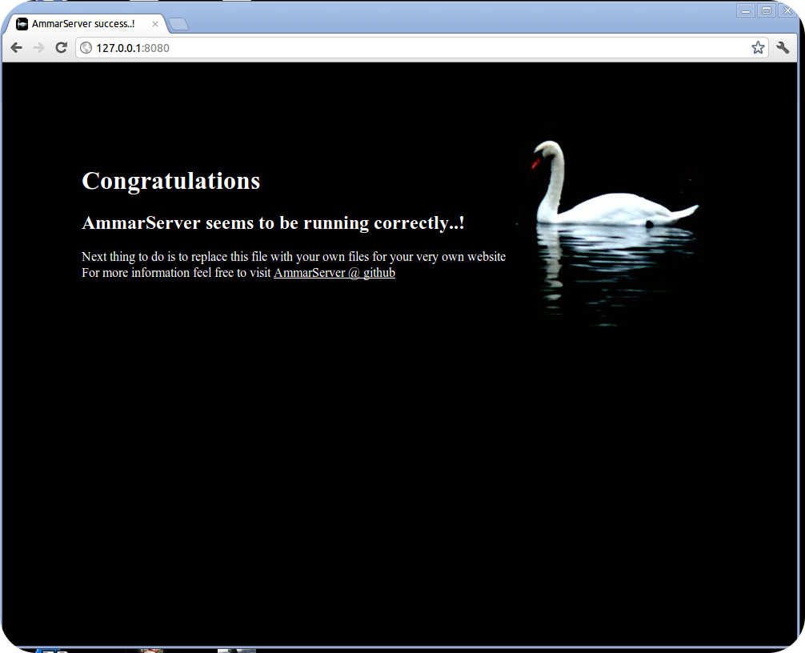

AmmarServer and Static PagesFor static files Ammar Server operates like every other web server. It can use a directory ( by default public_html ) and make all the files and folders inside visible to web clients.
For example lets say we want to write the default index file and serve a Hello World message instead.
We would go and replace the index.html file with a new one containing <html><body>Hello World</body></html> and thats it.
All the incoming requests would get served with the hello world page just as usual..
Writing a More Dynamic ServiceStepping up the difficulty , lets say we want to write a dynamic hello world message which will count the times it got viewed and output them to the client.
You can review the helloworld example here
Download AmmarServer
Latest Snapshot